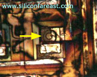

Microthermography or Hot Spot Detection
Microthermography
or
Hot Spot Detection is a
semiconductor failure analysis technique used to locate
areas on the die surface that exhibit excessive heating.
Excessive heating indicates a high current flow, which may be due
to die defects or abnormalities like dielectric ruptures, metallization
shorts, and leaky junctions.
An
inexpensive yet effective Hot Spot Detection technique consists of
dropping liquid crystal on the die surface of a biased device. The bias is chosen such that the defect site is allowed to
conduct enough current to generate the amount of heat needed to change
the visual characteristics of the liquid crystal.
This technique is popularly known as the 'Liquid Crystal
Technique.'
Liquid
crystals undergo several phase changes as the temperature increases.
At very low temperatures, liquid crystals are solid and are said
to be in its crystalline phase.
At a higher temperature liquid crystals become liquid while retaining the
'crystalline' nature of its optical properties, i.e., their elongated
molecules tend to align parallel to each other.
There are two liquid
crystal phases wherein the physical phase is liquid but the optical
characteristics are crystalline, namely, the 'smectic' phase and the 'nematic'
phase. At even higher
temperatures, the liquid crystal goes into its 'isotropic phase,'
wherein its molecules are randomly located and randomly oriented.
Only
two phases are important in liquid crystals that are commercially
available for Hot Spot Detection, i.e., the isotropic and the nematic
phases. When in its
isotropic phase, the liquid crystal appears as a clear liquid, offering
no distinctive optical characteristics because of the homogeneous
distribution of its molecules. When
it is in its nematic phase, the liquid crystal has a milky appearance
and exhibits optical properties similar to those of crystal
structures.
When
viewed using an optical microscope equipped with a polarizing filter in the
illumination path and a cross polarized filter (analyzer) in the viewing
path, thin films of liquid crystal in isotropic and nematic phases
appear very different. Isotropic
films appear black, since the cross polarized light is blocked by the
analyzer.
On the other hand, nematic films appear to be
rainbow-colored, since light reflected from nematic films 'twist' such
that they are able to pass through the analyzer.
Hots spots raise the temperature of the liquid crystal, making it
appear black at that spot.
The die surface of a well-prepared sample with a hot spot will therefore
appear as rainbow-colored, except for the hot spot which will appear as
a blackened area.
When
performing Liquid Crystal Hot Spot Detection, the following must be observed:
The
correct amount of liquid crystal must be dropped on the die surface. Too
thick a film of liquid crystal would appear uniformly black, making it
impossible to detect nematic phase changes from temperature increases.
Too thin a film makes the surface appear as streaks of dark and
light grays, also making hot spots less visible.
The perfect amount would make the general area of the die surface
look rainbow-colored, which would offer the best contrast to a hot spot.
The
bias must be chosen such that the defect site carries enough current to
heat the liquid crystal at the hot spot, but not enough current to heat
the entire liquid crystal film. If the hot spot generates so much
heat that the entire die surface
is
darkened even at minimum power setting,
the excitation must be 'pulsed' or oscillated. This will allow the
analyst to locate the hot spot, which is the point of origin and return
of the oscillating color contrast on the die surface.
The
polarizing filters of the microscope must be adjusted to provide the
best rainbow color for the liquid crystal film.
Care
must be taken when
interpreting
the
presence
or
absence
of hot
spots
on the die. Although an abnormal hot spot very likely means that
something wrong, the hot spot itself is not always the actual failure
site. Some hot spots come from good components that are just forced to
conduct high currents by an anomaly somewhere else in the circuit.
It is important to complement microthermography results with those of
other FA techniques in order to arrive at the right conclusion.

Figure 1.
Photo of a hot spot during
liquid
crystal analysis; note the rainbow
color of the
liquid crystal
Microthermography is used for detecting the following:
Dielectric Shorts or Breakdowns, Metallization Shorts, Junction
Leakages, Mobile Ionic Contamination, etc.
See Also:
Failure
Analysis; All
FA Techniques;
Optical
Inspection;
Curve Tracing;
LEM;
Microprobing; FA Lab
Equipment; Basic FA
Flows;
Package Failures; Die
Failures
HOME
Copyright
©
2001-Present
www.EESemi.com.
All Rights Reserved.